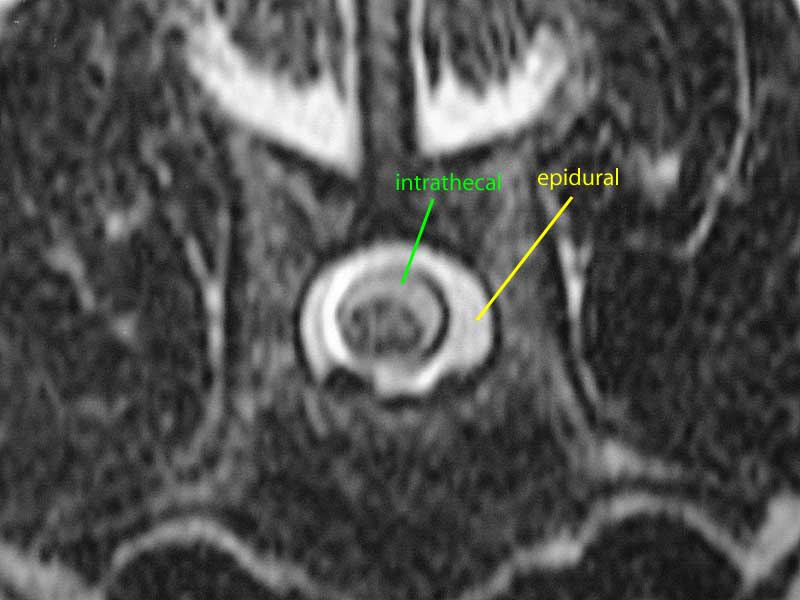
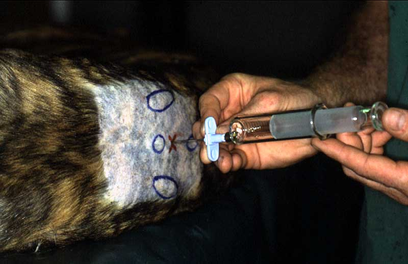

spinal administration
Drugs can be given epidurally (between the dura mater and the periosteum) or intrathecally (between the dura mater and the spinal cord). Analgesic drugs such as local anaesthetics are the only drugs usually given by these routes.

MRI of a dog's spine. The black blobs at the bottom of the spinal canal are venous sinuses.
back to drug administration, opioids, local anaesthetics

Checking that the needle is in the epidural space using the loss of resistance technique.
back to drug administration, opioids, local anaesthetics
| 3 Pharmacokinetics index |
| |
copyright
Massey University
|